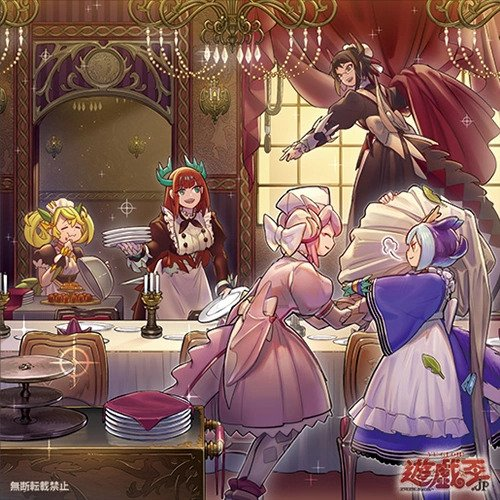

How To Train Your Maid
When the maids are dragons?
The Dragonmaids are an archetype in Yu-Gi-Oh based upon the aesthetic of the well-known anime/manga "Miss Kobayashi's Dragon Maid". They are comprised of a set of dragon type monsters with the ability to swap between humanoid maid and powerful dragon forms. Whilst not necessarily the strongest archetype when it comes to going first and establishing an unbreakable board, the Dragonmaids excel at the grind game. Each turn spent in the game gives the archetype a chance to outpace their opponent in card advantage by resummoning their maids and dragons from the graveyard. Let's take a better look at what makes these maids so memorable, shall we?